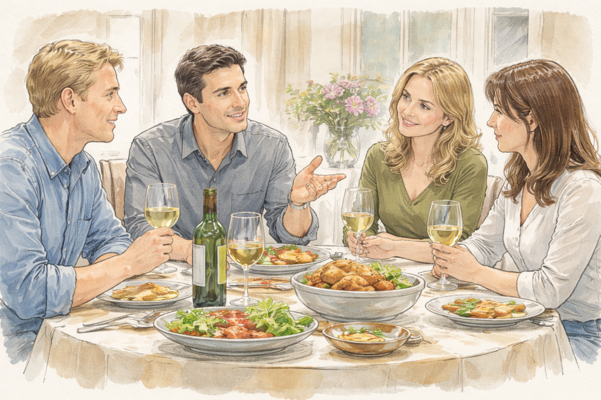

Months earlier, she went through the same way. The heaviness in her head had been worse then—thick, unmistakable. She went to the ER, the process unfolded efficiently and without drama. Super long waiting, Blood tests. etc. The nurses were kind, practiced. Everything came back normal. No signs of poisoning. No neurological event. Stress, they suggested. Exhaustion. Hormonal fluctuation. One doctor asked gently whether she’d been sleeping enough. She nodded. It was easier than explaining the rest. She went home with paperwork and instructions to return if symptoms worsened. They didn’t worsen. They dissolved, slowly, until the memory of them began to feel exaggerated, almost theatrical. Within days, she told herself it had been nothing. Within weeks, she stopped thinking about it altogether. Until now.
The memory surfaced later that evening, uninvited, while she sat at the edge of consciousness, her body heavy and unresponsive, the air still moving steadily from the vent. Other memories followed, less urgent at first.
Her older daughter’s birthday. The first one after the separation. Ryane had insisted on celebrating together, framing it as something done for the child rather than for himself. He invited a couple he knew—Paul and Nancy—who lived in the basement suite of the house at the time. Paul had worked with Ryane briefly, long enough to share stories, long enough to develop the loose familiarity that came from overlapping social circles and mutual acquaintances. People to gossip with. People whose names recurred. The dinner had been awkward but civil. Cake. Small talk. The careful choreography of separated adults pretending to agree on things. At some point, after the children drifted away from the table, Paul began talking about his work. The company was having problems, he said. Big ones. The partners were in conflict, deeply divided. One of them had moved out. Another had stopped answering calls. The separation was ugly, fueled by arguments that had gone on too long. Nancy listened without reacting, her hand resting on her glass. Paul went on. One of the company’s trucks had gone missing a few days earlier. Vanished overnight. They’d reported it to the police, of course. Standard procedure. The truck turned up eventually, abandoned, intact. Nothing taken. No explanation offered. “The police didn’t really do anything,” Paul said, shrugging. “If you can’t find the evidence yourself, they won’t help you find it.” He sighed as if this were a general truth, not a complaint. Ryane nodded. Slowly. In agreement. “That’s how it is,” he said. “You have to know what you’re looking for.” She remembered watching them then, the ease with which they aligned, the way the conversation settled comfortably into shared cynicism. She hadn’t thought much of it at the time. It was the kind of talk men fell into, she told herself—systems failing, authorities useless, responsibility shifting quietly away from institutions and back onto individuals. Now, lying motionless as the furnace continued to blow, the memory felt different. Sharper.
The faint fragrance lingered in the air, steady and even. The camera’s presence—though unseen by her—had already changed the room. And somewhere between wakefulness and sleep, a thought tried to surface, incomplete but insistent: This had happened before.

Around three years earlier, Susan and her husband had lived separately under the same roof for some time already. The decision had not been mutual. Ryane refused to divorce, not out of hope or reconciliation, but out of resistance. He did not like things leaving his control. The marriage, even in its broken state, remained something he considered his—an arrangement, a structure, a possession he was unwilling to relinquish. They coexisted in a state of suspended conflict. Some days passed quietly, others collapsed into arguments over small things: schedules, money, the children’s routines, silences interpreted as accusations. Nothing was resolved. Everything was postponed. Time stretched, then hardened. It was during this period that Ryane asked his mother to come stay with them for a while. He framed it as practical—help with the children, shared expenses, temporary support. Along with her came Paul, at the time a young man still looking for steady work. He needed a place to stay, Ryane said. Just for a bit. Susan was not consulted so much as informed. She hesitated, briefly. There had been unpleasant moments in the past—conversations that lingered too long, looks that made her uneasy without offering a clear reason. But she dismissed them. Fatigue had a way of sharpening harmless things into imagined threats. She did not want to become suspicious of everyone. More than that, she did not want to escalate an already fragile household. So she agreed.
She cleaned the basement suite herself. Made space. Explained the house rules. She told herself this was temporary, that generosity was easier than resistance, that kindness might soften what had grown rigid between her and Ryane. When Paul arrived, polite and reserved, she reassured herself she had been right. He kept his head down. He thanked her often. He spoke little.
At first, nothing seemed wrong. Yet the house felt fuller in a way that had nothing to do with people. Sounds traveled differently. Doors closed more often. Conversations paused when she entered rooms. Ryane appeared calmer, more grounded, as if the presence of others reinforced something in him that had been wavering. Susan noticed these things without naming them. She was busy. She had children. She had learned, over time, to prioritize what demanded immediate attention and let the rest blur into background noise. Only later would she realize how early the pattern had begun. How quietly the house had shifted from shared space into something closer to territory.
Not long after they moved in, something happened that Susan could not explain.
One morning, she woke earlier than usual. The room was quiet, the pale light of early morning still resting on the ceiling. For a moment, she lay still, listening for movement in the house—footsteps, a door closing, the familiar sounds that usually came before the day properly began. Then she felt it.
A dampness, unfamiliar and immediate, something wrong with her body that did not belong to sleep. She sat up slowly, confused, her mind trying to catch up with the sensation. When she touched the sheet and then herself, the realization came with a sudden, sharp clarity that made her breath stop. Someone had been there.
The thought arrived whole and undeniable. The signs were obvious enough that her body recognized them before her mind was ready to accept them. Yet she had no memory of anything happening during the night: no sound, no struggle, no waking. She sat frozen on the edge of the bed.
Panic rose quickly, spreading through her chest like heat. She tried to remember—anything. Had she heard the door? Had she woken even briefly? The night behind her felt blank, smooth, and unreachable, as if a piece of time had been cut out and taken away. It was the first time anything like this had happened since she and Ryane had separated.
The house was still quiet. For several seconds, she considered waking the children, calling someone, doing something that matched the seriousness of what she believed had happened. But the clock beside the bed showed the time, and the ordinary structure of the morning pressed in around her. It was a weekday. The kids needed to get ready for school. That small fact felt strangely powerful, like gravity pulling her back into routine. She stood slowly and walked to the bathroom. The shower ran hotter than usual, steam filling the small space while she stood under the water longer than she meant to. She washed carefully, methodically, as if the repetition of simple actions could steady her thoughts. But nothing settled. While she helped the children get dressed, pack their lunches, and check their backpacks, the same questions kept coming up.How could this have happened without her waking?
Who had entered the room?
And what was she supposed to do now?
She said nothing. Not to the children. Not to Ryane when he passed through the kitchen. The words refused to form, too heavy and too uncertain. Even inside her own mind, they felt unstable, like accusations made without proof. Yet the certainty in her body remained.
Something had happened.
And she had no idea how to begin proving it.
The next night unfolded almost normally. After the children went to bed, the house settled into its usual evening silence. Dishes had been washed, and lights in the hallway turned off one by one. The faint sounds of the basement—footsteps, a chair moving, the murmur of a television—filtered upward through the floor but never clearly enough to follow. Susan sat on the bed with her computer balanced across her knees. She had been trying to continue a course she had started months earlier, something practical, something that might lead to better work later. The screen cast a soft light across the room, illuminating the small space between the bed and the dresser. Her younger daughter slept beside her, turned inward, one small hand resting against Susan’s thigh as if to confirm she was still there. Susan typed slowly, rereading the same paragraph more than once. Her concentration refused to hold. The memory of the morning kept returning without warning, slipping between her thoughts whenever the room grew too quiet. Around eleven o’clock, the door opened.
It happened without knocking. The handle turned, the door moved inward just enough for the hallway light to spill across the floor. Ryane stood there. For a moment, he didn’t speak. His eyes moved quickly across the room—first to the bed, then to the child sleeping there, then to Susan sitting upright with her laptop. “Still awake,” he said, though it sounded less like a question than an observation.
She looked up at him. “Just finishing something.” He nodded once. The pause lasted only a second or two more before he pulled the door closed again, and his footsteps faded down the hallway. Susan stared at the door after it shut.
At the time, nothing in the moment had seemed unusual. Ryane had done that before—opened the door briefly, checked on the children, looked around as if confirming everything was in place. She had never questioned it. It was simply part of living in the same house after separation: boundaries blurred but not formally redrawn. But now the action replayed itself differently in her mind. She lowered the laptop slowly.
It wasn’t the first time he had opened the door like that. There had been other nights—she could remember them now—when the handle turned quietly, when he stepped halfway inside and then left without saying anything. At the time she had barely noticed. The house had always been shared space. She had no habit of locking the door. Why would she? Yet tonight the memory felt altered, as if the meaning of it had shifted overnight. The door is opening. The glance around the room. The quiet closing again. If someone had entered the room during the night before, they would have needed to open that same door. The thought formed slowly but firmly. For the first time, she looked at the handle not as something ordinary, but as a boundary she had never really protected. Beside her, her daughter stirred and settled again into sleep. Susan reached over and closed the laptop. The room grew darker without the screen. She lay down carefully, but sleep did not come. Her eyes remained open, fixed on the outline of the door across the room. And sometime after midnight, when the house had grown completely still, she got up quietly and turned the lock for the first time.
By that time, Susan had someone she spoke to regularly—a counselor she had started seeing months earlier. At first, the sessions were meant to help with her daughters. Discipline, communication, and the small but constant frictions that came with raising children in a divided household. The conversations had been practical, structured. Over time, though, they widened. It became easier for Susan to speak there than anywhere else. The room was neutral. The questions were measured. There was no interruption, no argument waiting at the edge of every sentence. Gradually, she began to share more. Not all at once. Pieces are offered across sessions. The tension in the house. The way Ryane moved through it was as if nothing had fundamentally changed. The unease she sometimes felt without being able to name it. The small details that didn’t seem important enough to stand on their own, but that didn’t disappear either.
The counselor listened. She took notes occasionally, nodded at intervals, and asked for clarification in a steady, even tone. When Susan finally spoke about that morning—the one she could not explain—she did so carefully, choosing her words as if precision might make the experience more credible. She described the physical certainty, the absence of memory, the confusion that followed. She mentioned the door. The nights. The way things had begun to feel misaligned. There was a pause when she finished. Long enough for Susan to notice. The counselor did not dismiss her directly. She did not contradict her. Instead, she shifted the frame. “Have you been under more stress than usual?” she asked. Susan hesitated. “I mean… yes. But this wasn’t—” “Sometimes,” the counselor continued gently, “when stress accumulates, the body can produce very convincing sensations. It can feel real. Completely real. And memory gaps, especially around sleep, are not uncommon.” Susan felt something tighten in her chest. “I know what I felt,” she said, quieter now. “I’m not saying you didn’t feel it,” the counselor replied. “I’m asking whether there might be another explanation. Something internal rather than external.” The words were calm, reasonable. That was what made them difficult to push against. After that, the questions changed direction. Sleep patterns. Anxiety levels. Emotional triggers. Whether she had experienced anything similar before. Whether she ever found herself uncertain about what was real immediately after waking. Susan answered, but something in her had already withdrawn.
She had come into the room with something fragile but solid—an experience she didn’t understand, but trusted. By the time the session ended, that solidity had been softened, edged with doubt. Not replaced, but surrounded. Walking out, she tried to hold onto what she knew. The certainty of her body. The absence in her memory. The way the door opened at night. But alongside those, another voice had begun to form—quieter, persistent, harder to argue with because it came from outside her. What if she was wrong? The thought didn’t erase the others. It sat beside them. And that, more than anything, made her feel alone.